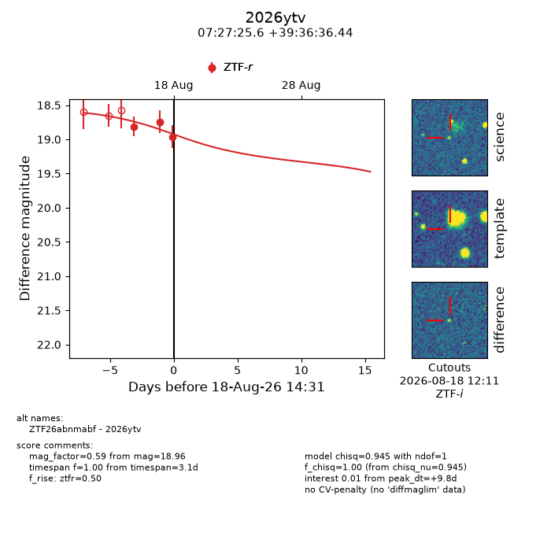
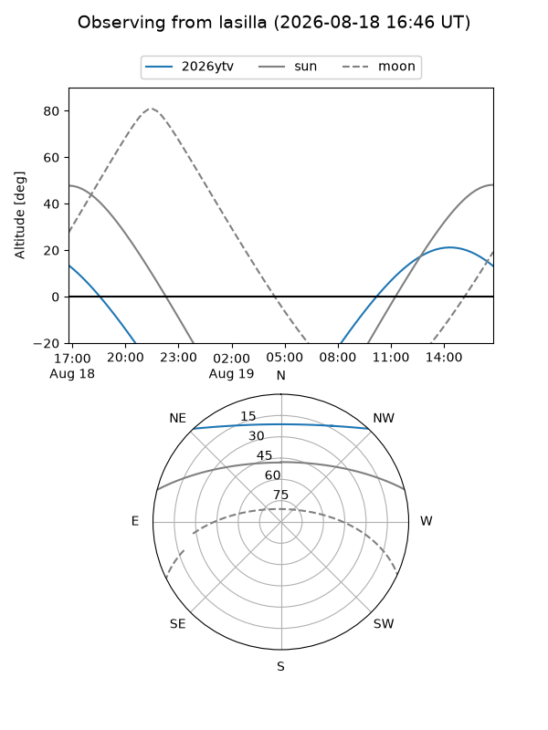
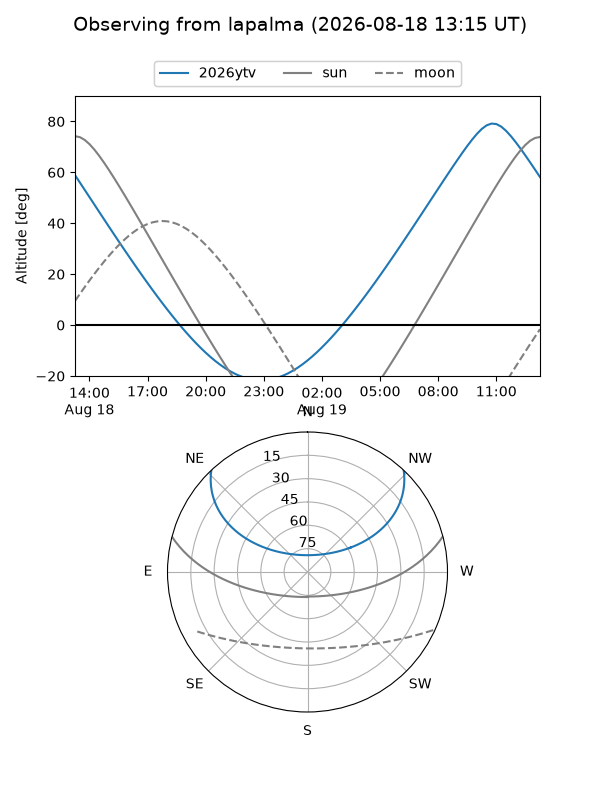
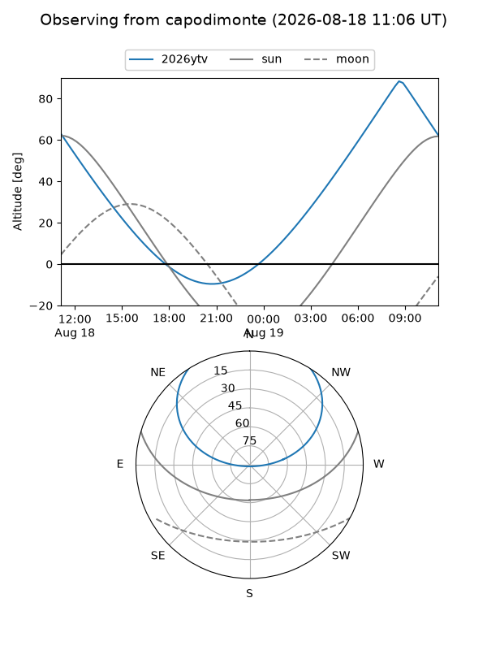
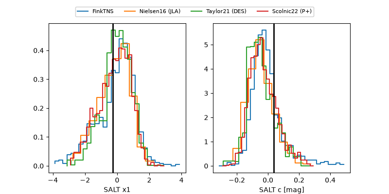

2026ytv
Target 2026ytv at 2026-08-18 14:35
Aliases and brokers:
FINK-ZTF: ztf.fink-portal.org/ZTF26abnmabf
Lasair-ZTF: lasair-ztf.lsst.ac.uk/objects/ZTF26abnmabf
ALeRCE-ZTF: alerce.online/object/ZTF26abnmabf
YSE-PZ: ziggy.ucolick.org/yse/transient_detail/2026ytv
TNS name: wis-tns.org/object/2026ytv
Direct TNS query: direct search
alt names
ZTF26abnmabf (ztf,fink_ztf)
2026ytv (tns,yse)
Coordinates:
equatorial (ra, dec) = 111.8566,+39.61012
equatorial (HMS+DMS) = 07:27:25.58,+39:36:36.44
galactic (l, b) = (178.9715,+23.44956)
Flags:
TNS type: nan
peak dt: +9.8
Photometry:
last ztfr=18.96
3 ztfr detections
Lightcurve

Visibility



Additional plots
